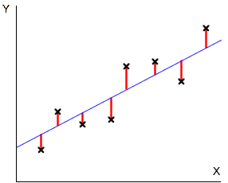

Mention that the residual sum of squares describes response variation that is unexplained by the explanatory variable. The least squares line is positioned to minimise it.
The total sum of squares describes overall variability in the response (ignoring the explanatory variable).
The difference between these describes variation that is explained by the explanatory variable,
SSExplained = SSTotal - SSResid
It can also be interpreted as a sum of squared vertical distances on the scatterplot — distances between the least squares line and the overall response mean.